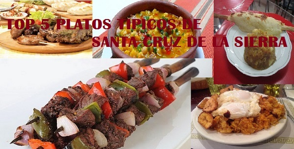

Comida tipica Santa Cruz - Bolivia
Las recetas de la abuela

Se tiene por referencia que desde la época anterior a la colonia, la base de la alimentación del habitante oriental fue la yuca, aunque también se consumía maíz, camote, calabazas y frijoles, además de una variedad carnes de animales, frutas silvestres y pescados.
Con la llegada de los españoles se introdujo el cultivo de arroz y el de plátano incorporándose estos productos a la dieta diaria.
Hoy en día en Santa Cruz la carne vacuna y el churrasco es una de las comidas favoritas. Sin embargo, los platos típicos mas representativos son: el majao, locro carretero, pacumuto y la sopa de maní.
Los pasteles son variados y usualmente son salados y dulces, ya que se preparan con queso, yuca, choclo, arroz y guineo.
A continuación presentamos cinco recetas de comidas típicas para su conocimiento.